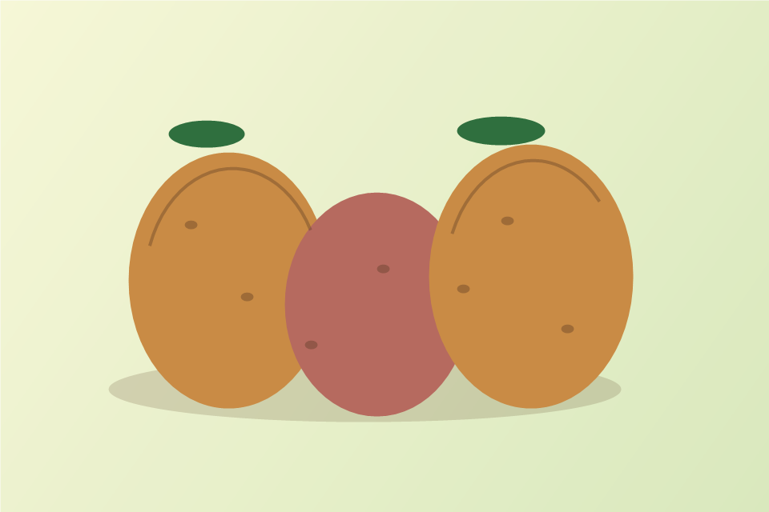

Le gout avant tout
Notre devotion commence par une evidence: la pomme de terre sait tout faire. Elle croustille en frites, fond en puree, dore en gratin et reste noble meme quand elle sort simplement de l'eau avec un peu de sel.
Pommes de terre, jeu et mini-guide
Explore quelques varietes, ouvre une partie de Snake et ramasse les patates sur une page dediee.

Notre serment
Notre devotion commence par une evidence: la pomme de terre sait tout faire. Elle croustille en frites, fond en puree, dore en gratin et reste noble meme quand elle sort simplement de l'eau avec un peu de sel.
Nous l'aimons parce qu'elle transforme les repas improvises en festins. Avec du beurre, de la chaleur et un minimum de respect, elle devient l'ingredient qui rassemble tout le monde autour de l'assiette.
Notre guerre culinaire contre les patates douces vient de la confusion qu'elles entretiennent. Elles portent le nom de patate, mais avancent avec leur gout sucre, leur couleur orangee et leur ambition de prendre une place qui ne leur revient pas.
Tant qu'il restera une frite a proteger, une puree a honorer ou un gratin a sauver, nous defendrons la vraie pomme de terre avec ferveur, humour et beaucoup trop de beurre.
Guide rapide
Choisis une variete farineuse comme la Bintje pour un interieur moelleux et une surface doree.
Prends une chair ferme comme Charlotte ou Roseval pour garder des tranches nettes.
Prefere une pomme de terre riche en amidon, facile a ecraser et a lier avec du beurre.
Le saviez-vous ?
On compte des milliers de varietes cultivees dans le monde.
La domestication de la pomme de terre vient d'Amerique du Sud.
Vapeur, four, puree, gratin ou frites: chaque texture a son usage.
Soutenez les vraies patates
En fait je sais pas combien y'en a...
Soyez parmis les premiers!
Nous vénérons la patate, au travers de plusieurs moyens :
Ce site, bien sûr
Notre Discord, pour discuter
Et l'app !!!!!
Cette app n'a initialement aucuns rapport avec les patates. En fait, aucuns rapport avec rien.
Seulement, son système de mods intégré le rend ultra-polyvalent ! On peut faire tout, même un mod Patate !
Je n'ai pas encore eu l'occasion de créer un tel mod, donc tant que ce n'est pas le cas, vous pouvez le faire pour la commu des pomme de terre !
Ben oui, j'ai pas de quoi acheter un certificat.
Donc, windows va vous dire que c'est pas connu, j'y peut rien voila.
L'app n'est encore que sur windows. Comment j'ai ni mac ni linux je pourrais meme pas débug...
Si vous voulez m'aider, vous pouvez venir sur mon discord !
Pas que les patates, malheureusement...
Vous pouvez aller sur mon site principal